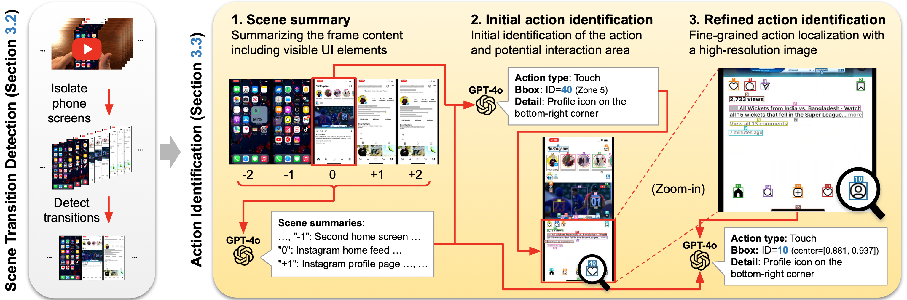
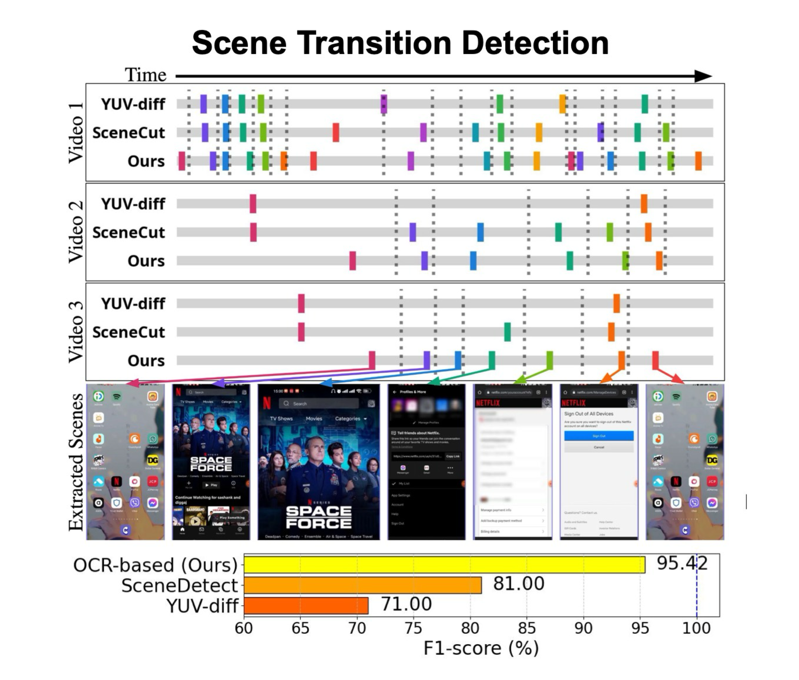
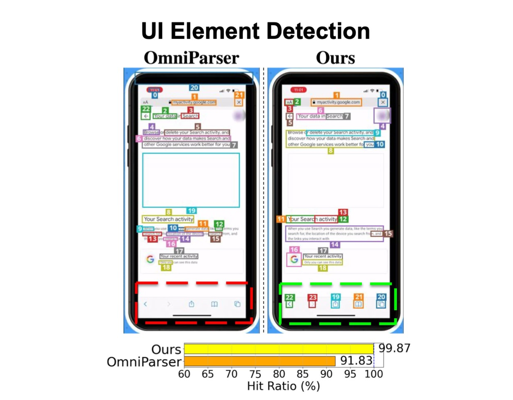
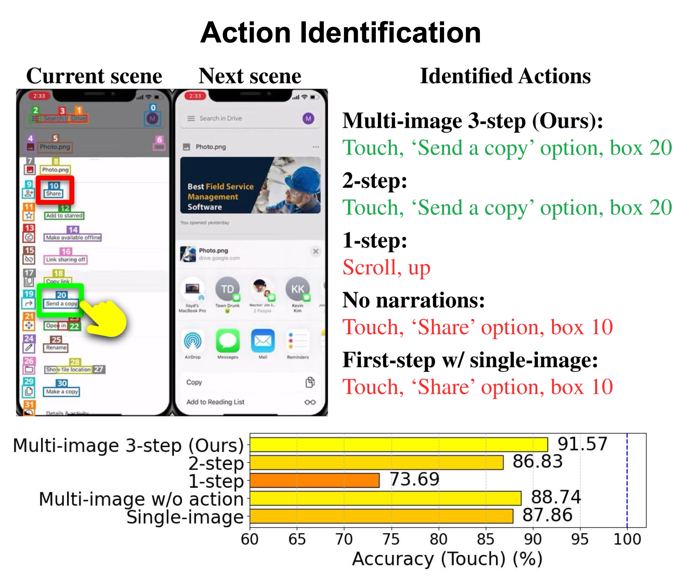

MONDAY (Mobile OS Navigation Task Dataset for Agents from YouTube) is a large-scale, comprehensive dataset designed to advance research in pixel-based GUI agents. Our dataset addresses key challenges in the field including multi-platform data, zero-access to the environment, and real-world task coverage. We collect data from pulbicly available videos using a robust, automated pipeline that ensures high quality across various mobile OS platforms (Android and iOS), OS versions, and user configurations.
The key contributions of our dataset include:
Our data collection pipeline consists of several carefully designed stages to extract high-quality mobile OS navigation data from real-world videos. The process includes video collection, scene segmentation, UI element detection, and action annotation.

Core components of the MONDAY data collection framework.
The pipeline follows these key steps:
MONDAY is split into 19,725 training videos, 495 validation videos, and 100 test videos. The training set includes 9,755 iOS and 9,970 Android videos. The validation set contains an equal distribution of 246 iOS and 249 Android videos, while the test set maintains the same balanced 50/50 split between platforms.
Video duration and action type distribution is described below:
(Left) Distribution of video duration in minutes. Red vertical dotted line stands for the average duration of 2.66 minutes. The majority of videos (77.8%) fall between 1-5.5 minutes, with a peak at 1.05 minutes.
(Right) Action type distribution in our dataset shows touch actions dominate at 79.83%, followed by scroll (8.53%) and other actions.



(Left) Our OCR-based approach significantly outperforms baselines by leveraging text content changes rather than traditional visual features.
(Middle) Our UI element detection is robust, accurately identifying home screen icons and bottom-positioned UI elements that OmniParser frequently misses.
(Right) Our multi-image 3-step approach outperforms simplified variants.
Step accuracies of the original pre-trained models (SeeClick, Llama-3.2) vs. the corresponding MONDAY-induced variants (SeeClick-MONDAY, Llama3.2-MONDAY). Models finetuned from MONDAY-induced variants consistently outperform the baselines and generalize well to an unseen mobile platform (Windows Mobile).
TBU
@inproceedings{jang2025_monday,
title={{Scalable Video-to-Dataset Generation for Cross-Platform Mobile Agents}},
author={Jang, Yunseok and Song, Yeda and Sohn, Sungryull and Logeswaran, Lajanugen and Luo, Tiange and Kim, Dong-Ki and Bae, Kyunghoon and Lee, Honglak},
booktitle={Proceedings of the IEEE/CVF Conference on Computer Vision and Pattern Recognition (CVPR)},
year={2025}
}